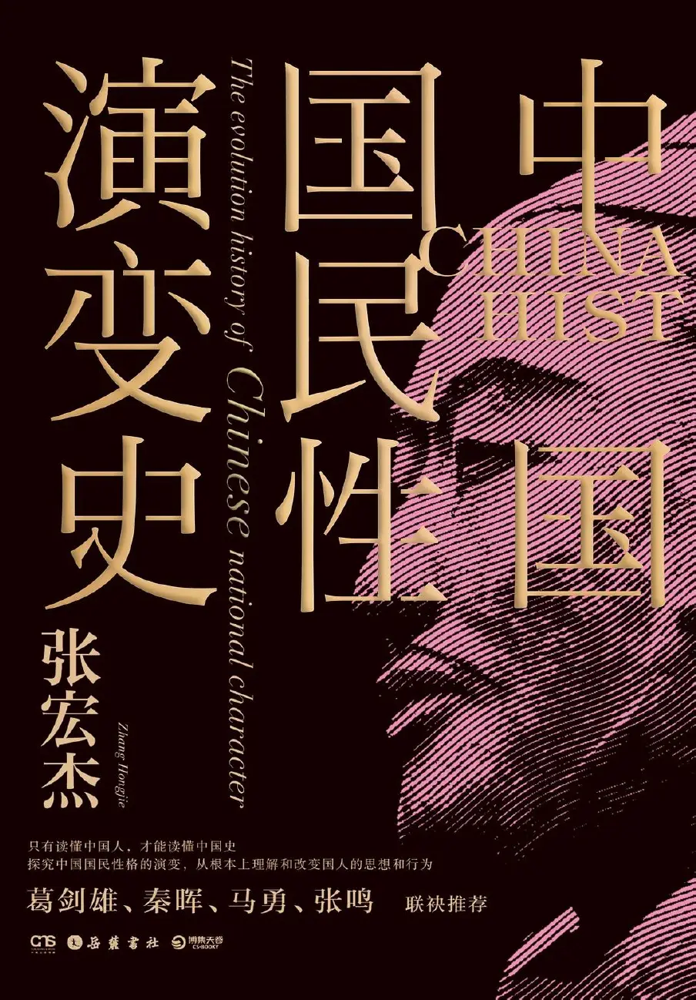

第五章 贵族精神的遗失#

绚丽多彩的春秋战国时代，被一个叫嬴政的人挥剑斩断了。
秦始皇的过错不在于他统一天下，也不在于他修长城，而在于他建立了皇帝制度。皇帝制度是天底下最自私的制度。这种统治制度的根本特征是，皇帝不是为国家而存在，相反，国家是为皇帝而存在。
皇帝一个人的意志大于所有臣民意志的总和。整个国家，就是给皇帝提供服务的庄园，全体臣民，其生存的意义都在于为皇帝奔走。一切制度安排，都以皇帝一人的利益为核心。
皇帝制度的出现，意味着贵族社会的终结。西方的贵族社会一直持续到十七世纪，而中国的贵族社会在公元前三世纪就结束了。也就是说，中国的贵族比西方早消失了两千年。这对中西方历史的发展影响是十分巨大的。
秦始皇
在秦始皇以前，贵族的权力地位来自血统，而不是现任国王的恩赐。因此国王并不能随意侵犯贵族的权利，更不能随便动贵族们的封地。贵族有相当的独立性和自由性，甚至可以与国王分庭抗礼，对最高权力形成了很大的制约。这就是所谓的“刑不上大夫，礼不下庶民”。梁启超说，贵族政治是宪政民主政治的最好基础：“贵族政治者，虽平民政治之蟊贼，然亦君主专制之悍敌也。贵族政治，固有常为平民政治之媒介者焉……贵族之对于平民，固少数也；其对于君主，则多数也。故贵族能裁抑君主，而要求得相当之权利，于是国宪之根本即以粗立。后此平民亦能以之为型，以之为楣，以彼之裁抑君主之术，还裁抑之，而求得相当之权利，是贵族政治之有助于民权者……泰西之有贵族而民权反，中国之无贵族而民权反缩，盖亦有由矣。”
但是秦始皇建立了皇帝制度之后，贵族阶层受到了毁灭性的打击。皇帝制度标志着一种全新统治方式的诞生：整个天下是皇帝一个人的私产，万众都是他的奴仆。正如黑格尔所说，这是一种“普遍奴隶制，只有皇帝一个人是自由的，其他的人，包括宰相，都是他的奴隶”。秦在统一六国的过程中，对各国贵族大加杀戮，没杀的也大部分流放或者迁徙。秦国原有的贵族，在皇帝制度建立之后，也几乎没有了特权，也和其他阶层一样沦为皇帝的奴仆。皇帝制度下，整个国家内没有任何可以与皇权相抗衡的力量对皇权进行有效制约。皇帝可以任意侵犯任何一个阶级的利益。一切利益都依靠皇帝的恩赐，一切权利都变得没有保障。
皇帝制度的另一个特点是大一统。只有皇帝制度之下，才真正做到了“溥天之下，莫非王土，率土之滨，莫非王臣”。秦始皇以前，中国社会虽然动荡、混乱、征战不休，但是却是自由、开放、多元的。一个知识分子在这个国家实现不了自己的抱负，感觉这个国王不尊重知识，不尊重文化，他可以到另一个国家去施展。现在他没别的选择了，他只能生活在一个皇帝的统治之下，他没有了逃亡的自由，失去了用脚投票的权利。
至于那些社会底层的人，当然地位更为恶化。一个国家的国王过于残暴，国民可以选择向别的国家逃亡。因此国君们都不得不多多少少自我克制一些。而现在，全天下的人没地方可逃了。他们只能听任秦始皇一个人作威作福。
统一了天下的秦始皇视天下人为自己的猎物。他的老师韩非子告诉他，人是一种本性卑劣的动物，他们渴望的只有利益而惧怕的只有暴力，所以，人不值得尊重也不能相信。统治天下的方法就是“执长鞭以御宇内”，用法、术、势来束缚和操纵，就像对待拴在车子前面的牲畜一样。秦始皇是靠军队，靠征服取得成功的，所以他相信暴力和恐怖可以解决一切问题。这个历来被中国人视为雄才大略的人用长城和大海把中国变成了一个囚禁猎物的大监狱，用依靠枪杆子和严刑峻法，把所有猎物都变成了劳工，变成了为他驾车的牲畜。在这个过程中他只遇到了一个麻烦，那就是人民是有思想的。于是他“焚书坑儒”“以吏为师”“以愚黔首”，全力取消民众的思想自由，终于达到“偶语者弃市，腹诽者诛，道路以目”的程度。
皇帝制度的发明，给中国社会的发展带来了灾难性后果。在皇帝制度下，皇帝支配一切、主宰一切，所有的权力，都为皇帝一个人垄断，社会的方方面面，都为皇帝一个人所牢牢控制。它通过空前严密而有效的专制体制抑制了社会活力，束缚了人民的创造力。在此后的两千年间，中国社会万马齐喑，死气沉沉，再没有出现一个可以与先秦诸子比肩的大思想家，社会制度也没有出现一次大的创新和变革。中国人一直在“做稳了奴隶”和“求做奴隶而不得”的了无新意的一治一乱中挣扎，“奴隶性格”和“专制性格”日益发展成民族性格中相辅相成的两个突出特征。从这个意义上说，中国人国民性劣化的第一个推手是秦始皇。
在秦始皇的统治下，中国文化特别是上层贵族文化受到了一次空前的毁灭性打击。
没有了贵族文化是什么结果呢？俄国小说《沦落的人们》中的一段话，很好地总结了贵族精神消失的后果，也同样适用于中国社会：“自从贵族开始饿死以后，生活里就没有人了……只剩下些商人……商人是什么？……商人不过是人面兽心的家伙，暂时披着人皮罢了。他粗野，他愚蠢，不懂生活的美妙，没有祖国的概念，不知道还有比五戈比铜币更高的东西……他们不但是贵族的敌人，也是所有高尚的人的敌人，他们贪求无厌，不会把生活装点得美丽些。”
换句话说，没有了贵族，一个社会也就没有了精神旗帜，失去了超越性，也失去了精致和优雅。中国人的群体人格受到了第一次粗暴摧残，人的尊严大打折扣。优雅、高贵无处容身，而不择手段的实用主义者更能适应这个严酷的社会。现实主义、贫困文化和流氓文化大行其道。
“贫困对人的尊严和人性的堕落所造成的后果是无法衡量的。”（查尔斯·威尔伯）贫穷使人的行为被现实利益完全控制，不再有想象力，不再有风度，不再有超越性。贫困文化进一步沉沦，就是流氓精神，就是好死不如赖活着，就是为了一口吃的，什么都干得出来。日本人渡边秀方这样评价中国人：“中国人有什么事都专讲实利与自利的性质，所以商业方面，是很拿手的。商业上所必要的宽大的忍耐的性质，是充分所有着。中国人别样事情都是很迟钝，唯商业方面则非常机敏可敬……他们只要能得钱，体面、主义、意见那些麻里麻烦的事都一概不讲的。”
在秦始皇之后，中国社会发展的一条主线就是贫困文化或者说底层文化日益取代贵族文化。秦代末期的楚汉之争，就是底层文化战胜贵族文化的第一例。其结果就是平民第一次登上了历史舞台的中心位置，并且把底层气质注入到最高政治当中。
汉高祖刘邦是一个起自底层的流氓。刘邦从小没读过书，也看不起读书人，看到读书人戴着端正的帽子，就叫人取下来，往里撒尿。他没有名也没有字，兄弟四人中他行三，所以人家叫他季，就是“刘老三”的意思。他从小游手好闲，不事家人生产作业。成年后，做了小吏，成天和那些衙役们勾肩搭背，“廷中吏无所不狎侮”，好酒及色，又没钱，便跑到酒铺赖酒喝。年近四十，还没成家立业，只不过在朋友帮助下混到了个小小的泗水亭长。亭长主要职掌“逐捕盗贼”，维持地方治安。用今天的话来说，相当于乡派出所所长。这个位置倒十分适合刘邦的流氓脾气。
楚汉战争中，刘邦被杀得大败，带着一对儿女和谋士滕公坐着一辆大车逃跑。为了让车子跑得快点，刘邦好几次把两个孩子推下车，都被滕公又拉了上来，气得刘邦“欲斩之者十余”。公元前26年，楚汉交战，刘邦的父亲和妻子当了俘虏。项羽在军前架起烧锅，把刘邦的父亲放在案板上，要挟刘邦说，再不投降，我就把你老爸下了油锅。谁知刘邦居然嬉皮笑脸地说，当年咱俩曾结拜为兄弟，所以我爸就是你爸，今天哥们既然打算把咱爸烹了，可别忘了给兄弟我留碗肉汤。项羽见刘邦一副流氓腔，没有半点办法，只好拉倒。
项羽祖先是战国时代的贵族，他身上残留着贵族的高贵和高傲，是一个个性分明的伟丈夫。楚汉战争当中，一次两军对垒，刘邦手下一个神射手叫楼烦，连射死项军三员大将。项羽大怒，“乃自被甲持戟挑战”，自己站出来了。“楼烦欲射之，项王瞋目叱之，楼烦目不敢视，手不敢发，遂走还入壁，不敢复出。”就是说，楼烦想射项羽，项羽往那儿一站，眼睛一瞪，大吼一声，楼烦吓得屁滚尿流，跑进军营当中再也不敢出来了。
乌江之战的结果更说明了项羽身上难以化解的贵族精神。乌江之战，项羽本有机会逃亡，因为当项羽来到乌江边时，有一条船在那里等他。驾船的乌江亭长早早等在那里，一心要营救项羽。他对项羽说，现在整个乌江之上，只有臣这一只小船，请大王立即上船，汉军无论如何追不过江的。江东虽小，地方千里，数十万人，完全可以在那里再成就霸业。然而项羽却谢绝了亭长的好意。他只是请亭长把他心爱的战马带过江去，自己却和随扈亲兵全都下马步行，冲入重围，同前来追杀的汉军短兵相接。这无疑是一场寡不敌众的战斗，也是一场无济于事的战斗。项羽受伤十多处，最终不支，自刎身亡。项羽以战死这种方式，维护了他最后的尊严。如果放弃战斗，举手投降，那就不是项羽了。
项羽死得很光荣，然而这个光荣掩盖不了这样的事实：贵族精神和流氓精神斗争的结果，是贵族精神失败了。贵族太好面子，太讲规则，而流氓则更厚黑。在一个恶化的生存环境中，后者当然更有竞争力。项羽的死，象征着贵族精神的失败。满嘴粗话的地痞刘邦的胜利，宣告了中国人精神上的第一次劣化。他证明，项羽式的高贵、矜持、理想主义已经不适于中国，而随机应变，不择手段的卑劣之徒却能脱颖而出。从那时候起，中国式竞争就变成了比谁更痞，谁更赖，谁的脸皮更厚，谁更残忍不在乎。